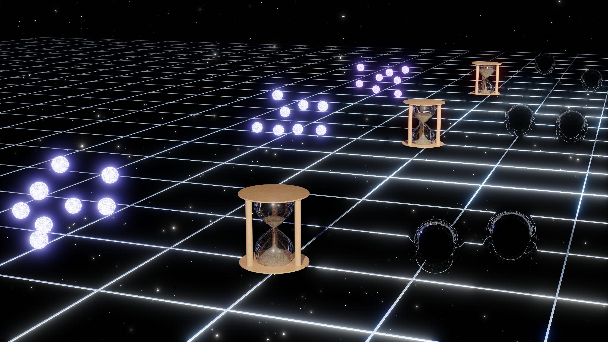

Qianhang Ding 丁乾航 To Understand To Find
Research Highlights

Black Holes as Laboratories for Dark Matter The dark matter surrounding black hole would be accreted and form dense dark environments, studying the imprint of dark matter on the observational signals from black hole via accretions and dynamical friction could be a dark matter probe. We explore the nature of dark matter around black holes in radio [2304.08824], optical [2505.09696] and gravitational wave channels [2510.27424]. With these studies, black hole would be a promising laboratory for dark matter in future observations.

Primordial Black Hole Binaries as a Cosmological Probe Since the detection of the first gravitational wave (GW) event GW150914, the primordial black hole (PBH) scenario is a potential explanation for the merger rate of detected GW events in LVK. On top of this possibility, we explore the future perspective of PBHs as a cosmological probe in GW astronomy. By using the PBH merger rate population and its evolution in redshift space, it can help study cosmology on background level: tracking the history of cosmic expansion [2312.13728], and first order level: structure growth and dark matter distribution [2410.02591].

Cosmic Tensions in Void Cosmology In current concordance cosmological model, Lambda-CDM model, we are facing serious cosmic tensions, such as Hubble tension, S_8 tension, dipole tension, etc. These problems challenge the basic assumption of cosmology, cosmological principle. We detailed study how a local structure, a Gpc-scale void, impacts our understanding on Hubble tension [1912.12600] and dipole tension [2211.06857], and a misinterpretation on cosmic tensions could mislead our understanding on fundamental physics in the Universe.

Cosmological Standard Timers Cosmological dynamic systems can work as standard timers in tracking the evolution of the Universe. By studing their intrinsic dynamics, the physical evolution time from the initial state to later states can be extracted. Meanwhile, cosmological redshift can be decoded from their observable. As the result, the redshift-time relation can be constructed in cosmological standard timers, which can constrain cosmological models. In the first study on standard timers, we have shown that through the Hawking radiation emitted from light primordial black hole (PBH) clusters, PBH stellar bubbles can be used as standard timers [2112.10422]. Later, I show that through gravitational waves emitted from PBH binaries, PBH binaries can be used as standard timers [2206.03142].
Research Works
[14]. Extracting Properties of Dark Dense Environment around Black Holes from Gravitational Waves [PDF]
Qianhang Ding, Minxi He, Hui-Yu Zhu
[13]. Superradiant Bosons Driving Supermassive Black Hole Mergers [PDF]
Qianhang Ding, Minxi He, Volodymyr Takhistov, Hui-Yu Zhu
Primordial Black Hole Mergers as Probes of Dark Matter in Galactic Center [PDF]
Qianhang Ding, Minxi He, Volodymyr Takhistov
The merger rate of primordial black hole binaries as a probe of Hubble parameter [PDF]
Qianhang Ding
A Dark Matter Probe in Accreting Pulsar-Black Hole Binaries [PDF]
Ali Akil, Qianhang Ding
Reconciling cosmic dipolar tensions with a gigaparsec void [PDF]
Tingqi Cai, Qianhang Ding, Yi Wang
Cosmological Standard Timers from Primordial Black Hole Binaries [PDF]
Qianhang Ding
Cosmological Standard Timers from Unstable Primordial Relics [PDF]
Yi-Fu Cai, Chao Chen, Qianhang Ding, Yi Wang
Ultrahigh-energy Gamma Rays and Gravitational Waves from Primordial Exotic Stellar Bubbles [PDF]
Yi-Fu Cai, Chao Chen, Qianhang Ding, Yi Wang
Detectability of Primordial Black Hole Binaries at High Redshift [PDF]
Qianhang Ding
Gravitational Collider Physics via Pulsar-Black Hole Binaries [PDF]
Qianhang Ding, Xi Tong, Yi Wang
A gigaparsec-scale local void and the Hubble tension [PDF]
Qianhang Ding, Tomohiro Nakama, Yi Wang
Detectability of Gravitational Waves from the Coalescence of Massive Primordial Black Holes with Initial Clustering [PDF]
Qianhang Ding, Tomohiro Nakama, Joseph Silk, Yi Wang
Imprints of Schwinger Effect on Primordial Spectra [PDF]
Wan Zhen Chua, Qianhang Ding, Yi Wang, Siyi Zhou
My Research Details in Google Scholar